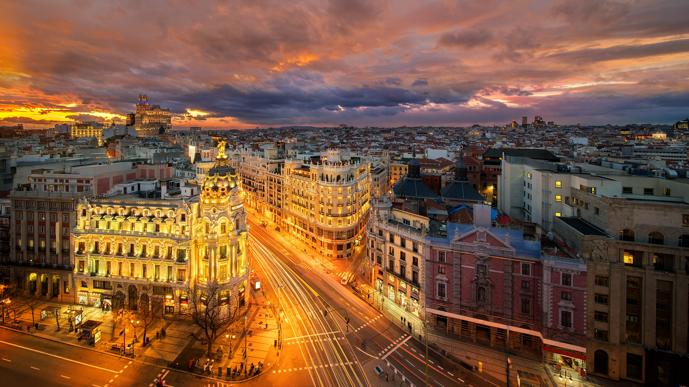

Madrid
Madrid, İspanya'nın başkenti ve Madrid bölgesinin yönetim merkezi. İber Yarımadası'nın orta kesiminde yer alır. Madrid; İstanbul, Moskova, Paris ve Londra'dan sonra Avrupa'nın en kalabalık beşinci şehridir.
İspanya'nın başkenti olan Madrid, İspanya Hükûmeti ve Bakanlıklarının genel merkezine ev sahipliği yapmaktadır. Bunun yanı sıra İspanya krallarının resmi ikametgahı, Genel Mahkemeler (Kongre ve Senato), Yüksek Mahkeme ve Anayasa Mahkemesi de başkent Madrid'de bulunmaktadır. Ekonomik olarak Londra, Paris ve Moskova'dan sonra Avrupa'nın dördüncü en zengin şehridir. Madrid, Pekin ve Milano'dan sonra dünyanın en çok çokuluslu varlığına sahip 8. şehridir. Şehir ayrıca uluslararası alanda, Dünya Turizm Örgütü, Uluslararası Menkul Kıymetler Komisyonları Örgütü, İber-Amerikan Genel Sekreterliği, Uluslararası İber-Amerika Gençlik Örgütü ve Kamu Yararı Gözetim Kurulu gibi örgütlerin genel merkezlerine ev sahipliği yapmaktadır. Şehirde çok sayıda müze bulunmaktadır. Bunların içerisinde Prado Müzesi (El Museo del Prado), dünyanın en büyük sanat galerisi olarak kabul edilmektedir.